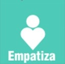
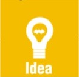
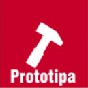
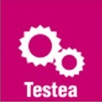

Language: English
Debemos tener muy claro que aún no hemos pensado en ninguna solución que resuelva el reto, hay que confiar en el proceso y no anticiparnos en dar una solución. Esta es una de las tareas más complicadas ya que todos tenemos nuestras ideas pensadas y nos apresuramos en dar una solución.
Fases del Design Thinking
En esta primera fase debemos observar al usuario y empatizar con él. Si les preguntamos a los usuarios es muy probable que nos mientan ya sea consciente o inconscientemente, así que la clave de esta fase es el trabajo en campo.
Ahora toca analizar y resumir la información obtenida en el punto anterior. Tenemos la pared llena de posits con el mapa de empatía y el customer journey, pero esto es inmanejable, por lo que debemos definir un problema concreto que será el que debamos solucionar.
Llegados a este punto es donde podemos dejar fluir toda la creatividad del grupo. Como he comentado al principio es muy importante no dar soluciones o ideas a nuestro reto hasta que no llega este momento, en el que ya tenemos perfectamente definido el punto de vista del usuario.
Cuando hemos seleccionado las ideas hay que hacerlas tangibles, es decir, realizar un prototipo de cada una. Lo importante es que este primer prototipo sea lo más sencillo posible y no suponga un coste elevado, ni implique demasiado tiempo en su desarrollo.
Esta sería la fase final de esta metodología. Una vez llegados a este punto, se debe entregar el prototipo de la idea seleccionada al cliente o usuario para comprobar si realmente resolvemos su problema.
DESIGN THINKING
Empezaremos diciendo que es una metodología usada por los diseñadores de una marca o empresa; el Design Thinking se refiere a generar cualquier tipo de ideas innovadoras a la hora de crear la imagen de por ejemplo, productos o servicios, que tiendan a satisfacer de mejor manera las necesidades de los usuarios haciéndolos parte activa del proceso de creación.
DESARROLLAMOS EL TALLER EN NUESTRO PROYECTO
Empatizar
Desde hace unos años llegaron los mega centros en ellos podemos encontrar lo que son tiendas de diversas categorías, pero las más asistidas son los supermercados los cuales tenían un problema que es la perdida, daños o incluso robos de sus carritos de compra. Para esto realizamos primero un análisis en el comportamiento de los clientes que suelen alejar del establecimiento y esto perjudica al supermercado y las acciones que realiza la empresa como respuesta ante esta situación.
Definir
Una vez realizada la recopilación de información en la fase anterior, definiremos el problema para enfocarlo correctamente y de esta manera determinaremos que marcará su éxito; ahora debemos generar un interés en las empresas y clientes para que nuestro producto, de esta manera podremos recopilar mas ideas y calificarlas, así lograr que nuestra propuesta sea de fácil comprensión y adaptación.
Idear
Luego tener enfocado el problema de los carritos registramos todas las ideas que puedan dar solución a este problema de esta manera vemos las mejores opciones que eviten la perdida de carritos siendo entre implementar un sistema de seguridad o aumentando el personal en el establecimiento.
Prototipar
Puede ser que al principio solo algunos establecimientos apoyen nuestra idea sin embargo realizando pruebas en la cual pueda ser mostrado al cliente y a la empresa; de esta manera podremos ver sus reacciones y comentarios, lo cual nos genera mas ideas que puedan mejorar mucho más nuestro producto.
Testear
Dejamos que los usuarios interactúen con nuestro producto y que nos brinden su opinión respecto a los limites de distancias para ser usado los caritos de compras; luego respondemos a sus dudas y realizamos un contexto y situación perfecto para realizar nuestro producto final.